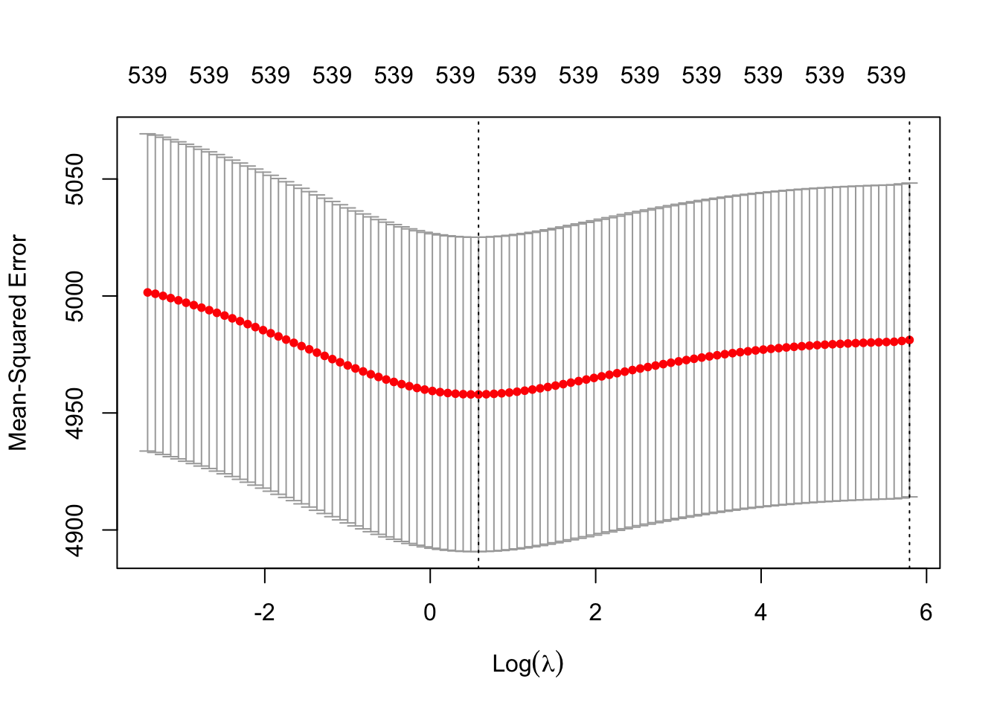
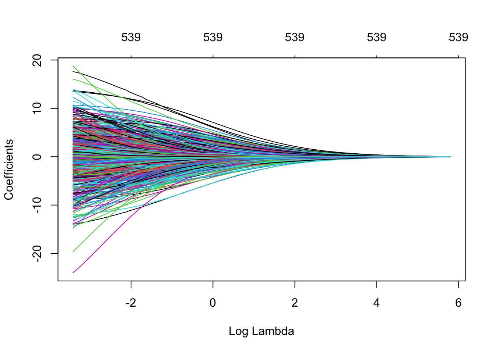

# Need to have the tidyverse installed prior to starting!
library(tidyverse)
nba_rapm_data <- read_csv("https://data.scorenetwork.org/data/nba_2223_season_rapm_data.csv.gz")INSTRUCTOR SOLUTIONS: Introduction to regularized adjusted plus-minus (RAPM)
An introduction to ridge regression in the context of estimating basketball player effects.
Intro and Data
The purpose of this module is to walk through the basics of building a regularized adjusted plus-minus (RAPM) model to estimate the impact of basketball players when they are on the court, while adjusting for the quality of their teammates and opponents.
We’ll use NBA data available on the SCORE Network Data repository, that was already constructed for the purpose of building and comparing different approaches for estimating player effects. The data were gathered using the hoopR package, you can find the script for initializing the data on GitHub.
The following code chunk reads in a dataset that is in a wide form (discussed in detail below) with indicator columns for every player that was observed during the 2022-23 regular season:
In this dataset, we have 32,358 unique shifts/stints with 539 players represented by the indicator variables (+1 if on court for home team, -1 if on court for away team, and 0 if not on court). Additional context is captured by the following variables:
| Variable | Description |
|---|---|
game_id |
Unique game ID |
stint_id |
Unique identifier within a game for a stint for particular combination of home and away lineup (in appearance of order, where 1 is the first stint in the game) |
n_pos |
Number of possessions (combined for both home and away) during the observed stint |
home_points |
Number of points scored by the home team during the stint |
away_points |
Number of points scored by the away team during the stint |
minutes |
Length of the stint in terms of minutes played |
margin |
Common response for RAPM models defined as: (home_points - away_points) / n_pos * 100 |
Since the above dataset does not include player names, only unique identifiers, we will also load in a table that includes player names to join over with the eventual results of the analysis. You can use the code chunk below to read in this table from the SCORE Network Data repository:
nba_player_table <- read_csv("https://data.scorenetwork.org/data/nba_2223_player_table.csv")Rows: 539 Columns: 2
── Column specification ────────────────────────────────────────────────────────
Delimiter: ","
chr (1): player_name
dbl (1): player_id
ℹ Use `spec()` to retrieve the full column specification for this data.
ℹ Specify the column types or set `show_col_types = FALSE` to quiet this message.nba_player_table# A tibble: 539 × 2
player_id player_name
<dbl> <chr>
1 1630173 Precious Achiuwa
2 203500 Steven Adams
3 1628389 Bam Adebayo
4 1630534 Ochai Agbaji
5 1630583 Santi Aldama
6 1629638 Nickeil Alexander-Walker
7 1628960 Grayson Allen
8 1628386 Jarrett Allen
9 1630631 Jose Alvarado
10 203937 Kyle Anderson
# ℹ 529 more rowsBackground Information
Measuring a player’s effect on game outcomes is one of the most fundamental tasks in sports analytics. But this is not a simple thing to do, and varies greatly between sports! In sports like basketball and hockey, a popular starting point for measuring a player’s impact is Plus-Minus which is defind as:
Plus-Minus = points scored by team when player is on court - points scored by opposing team when player is on court
You can find leaderboards for this statistic on the NBA stats website.
We’ll now walk through how to improve on Plus-Minus with regression-based approaches using the NBA data loaded in the beginning of the module.
Learn By Doing
Adjusted Plus-Minus (APM)
Introduced by Rosenbaum (2004), adjusted Plus-Minus (APM) is a regression-based approach to estimate a player’s impact on game outcomes while accounting for their teammates and opponents. How does this work? APM is a regression model where the predictors are indicator variable for every player denoting if they are on the court. The response variable is some type of outcome observed as the possession or shift-level (explained below). To be more explicit:
There are 10 players on the court at a time during a basketball game, 5 on side and 5 on the other.
A basketball game has \(T\) shifts (or stints) that are periods of time without substitutions (i.e., there are no changes to who are playing on the court).
We will consider each 10-person shift \(t = 1,\dots,T\) to be a single observation.
The reponse variable is some type of game outcome measure, such as the score differential during shift \(t\) from the view of the home team (i.e., home team score - away team score).
The predictor variables represented in the \(T \times p\) design matrix \(X\) are columns for each of the \(p\) players in the league, such that:
- \(X_{tj} = 1\) if player \(j\) is on the court for the home team during shift \(t\)
- \(X_{tj} = -1\) if player \(j\) is on the court for the away team during shift \(t\)
- \(X_{tj} = 0\) if player \(j\) is not on the court during shift \(t\)
As discussed at the beginning of this module, the nba_rapm_data you loaded contains these player indicator variables. The code chunk below prints the first so many rows of this dataset:
nba_rapm_data# A tibble: 32,358 × 546
game_id stint_id n_pos home_points away_points minutes margin `201939`
<chr> <dbl> <dbl> <dbl> <dbl> <dbl> <dbl> <dbl>
1 0022200002 1 14 5 2 2.7 21.4 1
2 0022200002 2 9 6 2 1.67 44.4 1
3 0022200002 3 5 0 3 0.480 -60 1
4 0022200002 4 5 5 1 0.78 80 1
5 0022200002 5 9 3 6 1.52 -33.3 1
6 0022200002 6 8 0 6 1.45 -75 1
7 0022200002 7 5 0 0 0.800 0 0
8 0022200002 8 5 1 0 0.9 20 0
9 0022200002 9 3 2 0 0.97 66.7 0
10 0022200002 10 7 2 2 1.66 0 1
# ℹ 32,348 more rows
# ℹ 538 more variables: `202691` <dbl>, `203110` <dbl>, `203952` <dbl>,
# `1626172` <dbl>, `1629673` <dbl>, `203210` <dbl>, `1630164` <dbl>,
# `1630228` <dbl>, `1628978` <dbl>, `1630541` <dbl>, `1631157` <dbl>,
# `201143` <dbl>, `203935` <dbl>, `1627759` <dbl>, `1628369` <dbl>,
# `1628401` <dbl>, `203943` <dbl>, `1629684` <dbl>, `1627763` <dbl>,
# `201933` <dbl>, `1630573` <dbl>, `101108` <dbl>, `1626164` <dbl>, …The Rosenbaum (2004) implementation of APM relies on weighted least squares, where you solve for the \(p\)-dimensional vector of player coefficients \(\boldsymbol{\beta}\) using a modified version of the traditional least squares model:
\[ \hat{\boldsymbol{\beta}} = \underset{\boldsymbol{\beta} \in \mathbb{R}^p}{\text{arg min}} \sum_{t = 1}^T n_t (y_t - X_t \boldsymbol{\beta})^2 \] * \(y_t\) is the response variable during shift \(t\), * \(X_t\) is the row of the design matrix for shift \(t\), and * \(n_t\) is the number possessions during shift \(t\).
We’ll now work through fitting and intepreting the APM model in the context of NBA 2022-23 regular season data.
First, compute the score differential as score_diff = home_points - away_points using mutate(). Append this new column to the nba_rapm_data dataset.
nba_rapm_data <- nba_rapm_data |>
mutate(score_diff = home_points - away_points)Next, create a new dataset named nba_apm_model_data that contains only the response score_diff and the player columns:
nba_apm_model_data <- nba_rapm_data |>
dplyr::select(-c(game_id, stint_id, n_pos, home_points, away_points, minutes,
margin))Next, fit the model using the code below:
rosenbaum_model <- lm(score_diff ~ 0 + ., data = nba_apm_model_data,
weights = nba_rapm_data$n_pos)We’re not going to view the summary of this model since it is a bit of a mess (there are many player variables!). Instead, we’ll take advantage of the broom package to view the coefficients. The code chunk below demonstrates how to use the broom package to tidy up the output so that one row of the rosenbaum_coef table corresponds to a single player coefficient with information you would observe from the summary() output such as the coefficient estimate (estimate), standard error (std.error), \(t\)-statistic (statistic), \(p\)-value (p.value):
library(broom)
rosenbaum_coef <- tidy(rosenbaum_model)
rosenbaum_coef# A tibble: 539 × 5
term estimate std.error statistic p.value
<chr> <dbl> <dbl> <dbl> <dbl>
1 `201939` -0.303 1.58 -0.192 0.848
2 `202691` -1.01 1.58 -0.641 0.521
3 `203110` 0.214 1.58 0.135 0.892
4 `203952` 0.0336 1.58 0.0213 0.983
5 `1626172` -0.417 1.58 -0.265 0.791
6 `1629673` -1.36 1.57 -0.866 0.386
7 `203210` -0.971 1.58 -0.613 0.540
8 `1630164` -1.02 1.59 -0.640 0.522
9 `1630228` -0.663 1.58 -0.421 0.674
10 `1628978` -0.565 1.57 -0.359 0.720
# ℹ 529 more rowsIn this current form, we have no idea which player is which since the term column contains the unique ID for each player. However, we can take advantage of the previously loaded nba_player_table (which has the same number of rows as rosenbaum_coef) to join over the player names to the rosenbaum_coef table.
We first need to modify the term column by removing the back-tick symbols and then convert the IDs to numeric values before joining over the player names. The code chunk below performs these steps, using the left_join() function by matching the two tables on the term and player_id columns:
rosenbaum_coef <- rosenbaum_coef |>
# First convert the term column to numeric:
mutate(term = as.numeric(str_remove_all(term, "`"))) |>
# Now join the player names:
left_join(nba_player_table, by = c("term" = "player_id"))
rosenbaum_coef# A tibble: 539 × 6
term estimate std.error statistic p.value player_name
<dbl> <dbl> <dbl> <dbl> <dbl> <chr>
1 201939 -0.303 1.58 -0.192 0.848 Stephen Curry
2 202691 -1.01 1.58 -0.641 0.521 Klay Thompson
3 203110 0.214 1.58 0.135 0.892 Draymond Green
4 203952 0.0336 1.58 0.0213 0.983 Andrew Wiggins
5 1626172 -0.417 1.58 -0.265 0.791 Kevon Looney
6 1629673 -1.36 1.57 -0.866 0.386 Jordan Poole
7 203210 -0.971 1.58 -0.613 0.540 JaMychal Green
8 1630164 -1.02 1.59 -0.640 0.522 James Wiseman
9 1630228 -0.663 1.58 -0.421 0.674 Jonathan Kuminga
10 1628978 -0.565 1.57 -0.359 0.720 Donte DiVincenzo
# ℹ 529 more rowsNow with the player names joined, let’s examine which players are the top 10 and bottom 10 in terms of their reported APM coefficients. You could easily view the top 10 players with the slice_max() function as demonstrated in the code chunk below:
rosenbaum_coef |>
slice_max(estimate, n = 10)# A tibble: 10 × 6
term estimate std.error statistic p.value player_name
<dbl> <dbl> <dbl> <dbl> <dbl> <chr>
1 1629735 5.72 2.66 2.15 0.0314 Chris Silva
2 1631495 4.82 3.41 1.41 0.157 Donovan Williams
3 1630648 4.04 3.26 1.24 0.215 Jordan Schakel
4 1629126 2.71 2.83 0.960 0.337 Deonte Burton
5 1630600 2.71 1.86 1.46 0.145 Isaiah Mobley
6 1629714 2.45 1.94 1.27 0.205 Jarrell Brantley
7 1641645 2.03 1.82 1.11 0.265 Xavier Cooks
8 1630649 1.92 4.61 0.417 0.677 Stanley Umude
9 1630644 1.40 2.11 0.664 0.507 Mac McClung
10 1628371 1.33 1.65 0.810 0.418 Jonathan Isaac And similarly use slice_min() to display the bottom 10:
rosenbaum_coef |>
slice_min(estimate, n = 10)# A tibble: 10 × 6
term estimate std.error statistic p.value player_name
<dbl> <dbl> <dbl> <dbl> <dbl> <chr>
1 1631211 -8.43 2.65 -3.19 0.00144 Trevor Keels
2 1630241 -5.95 1.91 -3.12 0.00181 Sam Merrill
3 1628435 -5.26 2.24 -2.35 0.0190 Chance Comanche
4 1630225 -3.93 1.92 -2.04 0.0410 Isaiah Todd
5 1630206 -3.80 2.08 -1.83 0.0672 Jay Scrubb
6 1628382 -3.58 1.73 -2.07 0.0381 Justin Jackson
7 1631157 -3.29 1.75 -1.88 0.0607 Ryan Rollins
8 1631311 -3.02 2.31 -1.31 0.191 Lester Quinones
9 1631320 -3.00 2.67 -1.12 0.261 Chima Moneke
10 1630643 -2.90 1.84 -1.58 0.115 Jay Huff These look like pretty extreme values, with the most extreme values observed by players that have limited playing time (upon searching their stats online). Before we think about how to address these issues, let’s look at what happens if we make a slight tweak to our model by using the margin variable as the response instead which is defined as:
margin= (home_points-away_points) /n_pos* 100
This response is often preferred in the basketball analytics community, as it places the response on a scale of points per 100 possessions (which is comparable to the number of possessions in each basketball game).
Regularized Adjusted Plus-Minus (RAPM)
Next, we’ll address some of the common issues facing APM models using Regularized Adjusted Plus-Minus (RAPM). The first public instance of RAPM for basketball was by Joe Sill (2010) in an award winning research paper at a sports analytics conference. This version of RAPM relies on ridge regression to apply a penalty term for shrinking player coefficients. More specifically, we can update the previous formula for estimating player coefficients as follows:
\[ \hat{\boldsymbol{\beta}}^{ridge} = \underset{\boldsymbol{\beta} \in \mathbb{R}^p}{\text{arg min}} \sum_{t = 1}^T (y_t - X_t \boldsymbol{\beta})^2 + \lambda \sum_{j = 1}^p \beta_p^2 \]
This objective for the ridge regression coefficients is effectively the combination of the loss (the traditional least squares objective) and newly included penalty term (the sum of the squared coefficient values). The ridge regression coefficients are solved for while balancing these two terms simultaneously, with the amount penalization controlled by \(\lambda\). We can consider \(\lambda\) to be a tuning parameter that controls the strength of the penalty term, and we will want to choose the \(\lambda\) based on out-of-sample performance.
We’ll now walk through how to fit a RAPM model using ridge regression. The most popular implementation of fitting ridge regression (and other common penalized regression models) in R is with the glmnet package.
First, grab only the player columns (i.e. the indicator variables in the original data), then convert to a matrix using as.matrix(), and store this as a new object named player_matrix.
player_matrix <- nba_margin_apm_model_data |>
dplyr::select(-margin) |>
as.matrix()Next, the code chunk below performs 10 fold cross-validation to fit a ridge regression model using glmnet. The function cv.glmnet is used to perform the 10 fold cross-validation, evaluating the out-of-sample performance for a grid of \(\lambda\) values. Fill in the missing code below using the above player_matrix as the predictors with the margin variable as the response:
library(glmnet)Loading required package: MatrixWarning: package 'Matrix' was built under R version 4.2.3
Attaching package: 'Matrix'The following objects are masked from 'package:tidyr':
expand, pack, unpackLoaded glmnet 4.1-8# View help for function with:
# help(cv.glmnet)
# ridge with 10 fold cv, no intercept and no standardization
fit_ridge_cv <- cv.glmnet(x = player_matrix,
y = nba_margin_apm_model_data$margin,
alpha = 0,
intercept = FALSE,
standardize = FALSE)The following plot prints out the penalty selection for this model, with the choices for \(\lambda\) displayed along the x-axis and the 10 fold cross-validation mean squared error displayed along the y-axis. The red points denote the average error across the 10 folds, with gray standard error intervals.
plot(fit_ridge_cv)
The first vertical dashed line corresponds to the choice of \(\lambda\) with the smallest average error across the 10 folds. The far right dashed line indicates the largest \(\lambda\) that is within one standard error of the minimum error \(\lambda\). Using this \(\lambda\) value is often referred to as the “one-standard error rule” as it implies picking a more “conservative” model with more penalized coefficients. In this case, we will prefer to choose the minimum error \(\lambda\) indicated with the first vertical dashed line.
We can easily plot the path of the ridge regression shrinkage, to see how the coefficients are pulled towards 0 as the penalty increases. The following code chunk shows this full path:
plot(fit_ridge_cv$glmnet.fit, xvar = "lambda")
Similar to the APM model analyis, we can again use the the broom package to make a tidy table of the coefficients for each player:
tidy_ridge_coef <- tidy(fit_ridge_cv$glmnet.fit)
tidy_ridge_coef# A tibble: 53,900 × 5
term step estimate lambda dev.ratio
<chr> <dbl> <dbl> <dbl> <dbl>
1 201939 1 2.77e-39 328. 1.45e-39
2 201939 2 6.41e- 4 299. 3.30e- 4
3 201939 3 7.23e- 4 273. 3.59e- 4
4 201939 4 7.91e- 4 248. 3.93e- 4
5 201939 5 8.69e- 4 226. 4.30e- 4
6 201939 6 9.54e- 4 206. 4.70e- 4
7 201939 7 1.05e- 3 188. 5.14e- 4
8 201939 8 1.15e- 3 171. 5.62e- 4
9 201939 9 1.27e- 3 156. 6.14e- 4
10 201939 10 1.39e- 3 142. 6.70e- 4
# ℹ 53,890 more rowsIf you look closely, this returns 100 rows for each player in the data - because it is returning the coefficient for each player at each value of the lambda penalty. We can filter to the values for the optimal choice of lambda based on the cross-validation results, and then join our player names as before:
rapm_ridge_coef <- tidy_ridge_coef |>
filter(lambda == fit_ridge_cv$lambda.min) |>
# Convert term to numeric:
mutate(term = as.numeric(term)) |>
# Now join the player names:
left_join(nba_player_table, by = c("term" = "player_id"))Discussion
You have now learned the basics behind RAPM models in the context of studying NBA player effects. We demonstrated how RAPM improves upon the simpler APM model, but there are still further questions and extensions to explore:
Evaluating and tuning RAPM models: We only considered tuning the \(\lambda\) penalty via the default cross-validation in
glmnetthat relies on the observation-level response variable which in this case was themarginduring an individual shift. However, the ultimate goal of the RAPM player coefficients could be for predicting game outcomes between two teams. One could tune the choice of \(\lambda\) based on predicting the game outcomes as a difference between the sum of the home and away team ratings.Alternative choices for design matrix: There is flexibility in the design matrix for RAPM models. We only considered the home/away version of the matrix in this module, but we could specify an alternative set-up so that offense and defense effects are estimated separately. This type of approach would split the shifts into possessions where one team is on offense and the other is on defense. Each player has two columns - one indicator column if they were on offense during the possession and another indicator if there were on defense. This provides two measures of player performance but can be more difficult to fit appropriately since this is doubling the dimensionality of the problem.
Prior information: This module only considered estimating player performance based on the observed appearances in games. But what if we have prior knowledge to tease apart players who often appear on the court together? We could account for priors via a Bayesian version of the RAPM model. Details of this type of approach will be left to be covered in a future module!